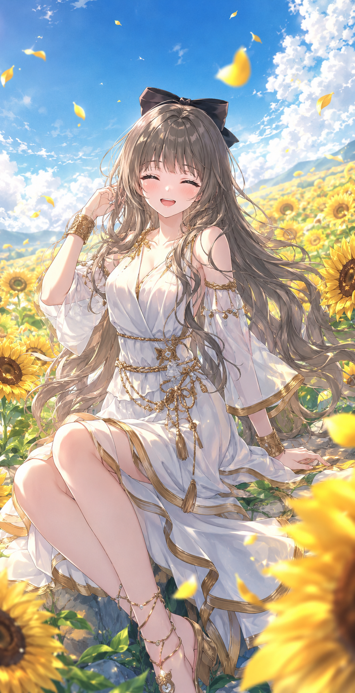

← Archive
0017
Positive Prompt
(masterpiece), (best quality), (ultra detailed), highly detailed anime illustration, adorable cheerful young woman, fluffy flowing hair strands, bright joyful smile, closed happy eyes, soft blush, delicate feminine face, pale glowing skin, carefree summer atmosphere, relaxed feminine pose, sitting naturally in a sunflower field, youthful slice-of-life mood, bright sunny afternoon, endless sunflower garden, vivid blue sky with fluffy clouds, flower petals flying in the wind, warm sunlight shining from above, soft breeze moving hair and dress, dreamy countryside scenery, sparkling summer atmosphere, emotional outdoor composition, soft cinematic lighting, glowing highlights, watercolor-like shading, painterly anime rendering, thin clean lineart, delicate shadow transitions, glossy detailed hair, highly rendered eyes, atmospheric composition, airy pastel color palette, soft bloom lighting, pixiv featured artwork, professional Japanese illustrator aesthetic, modern anime illustration style, Korean webtoon vibe, slice of life light novel art, refined painterly rendering, trending on pixiv, artstation quality, visually stunning composition
Negative Prompt
negative prompt: (low quality, blurry, bad anatomy, extra fingers, extra limbs, malformed hands, poorly drawn face, duplicated limbs, rough sketch, flat colors, watermark, logo, text, jpeg artifacts, realistic photo, 3d rendering)
Positive Prompt (masterpiece), (best quality), (ultra detailed), highly detailed anime illustration, adorable cheerful young woman, fluffy flowing hair strands, bright joyful smile, closed happy eyes, soft blush, delicate feminine face, pale glowing skin, carefree summer atmosphere, relaxed feminine pose, sitting naturally in a sunflower field, youthful slice-of-life mood, bright sunny afternoon, endless sunflower garden, vivid blue sky with fluffy clouds, flower petals flying in the wind, warm sunlight shining from above, soft breeze moving hair and dress, dreamy countryside scenery, sparkling summer atmosphere, emotional outdoor composition, soft cinematic lighting, glowing highlights, watercolor-like shading, painterly anime rendering, thin clean lineart, delicate shadow transitions, glossy detailed hair, highly rendered eyes, atmospheric composition, airy pastel color palette, soft bloom lighting, pixiv featured artwork, professional Japanese illustrator aesthetic, modern anime illustration style, Korean webtoon vibe, slice of life light novel art, refined painterly rendering, trending on pixiv, artstation quality, visually stunning composition Negative Prompt negative prompt: (low quality, blurry, bad anatomy, extra fingers, extra limbs, malformed hands, poorly drawn face, duplicated limbs, rough sketch, flat colors, watermark, logo, text, jpeg artifacts, realistic photo, 3d rendering)